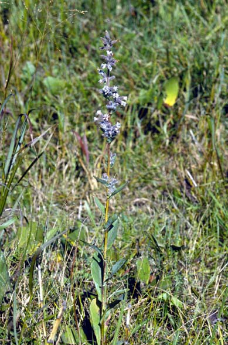
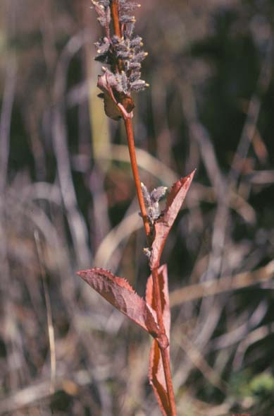

Prenanthes Racemosa
Family: Asteraceae
Glaucous White Lettuce
Swink/Wilhelm # 8

Click to view larger photo
FLOWERING: Mid-July to mid-October
SEED TIMING: September - late October
HABITAT: Moist Prairie
DIAGNOSTIC FEATURES: 2 - 6 feet. Upper leaves clasping, spatulate; lower ones stalked. Flower clusters in a narrow spike usually pink-tinged white. Blossoms bell-shaped. Plant smooth with a pale bloom.
TO PICK: Yellowish pappus forms on seed head when ripe.